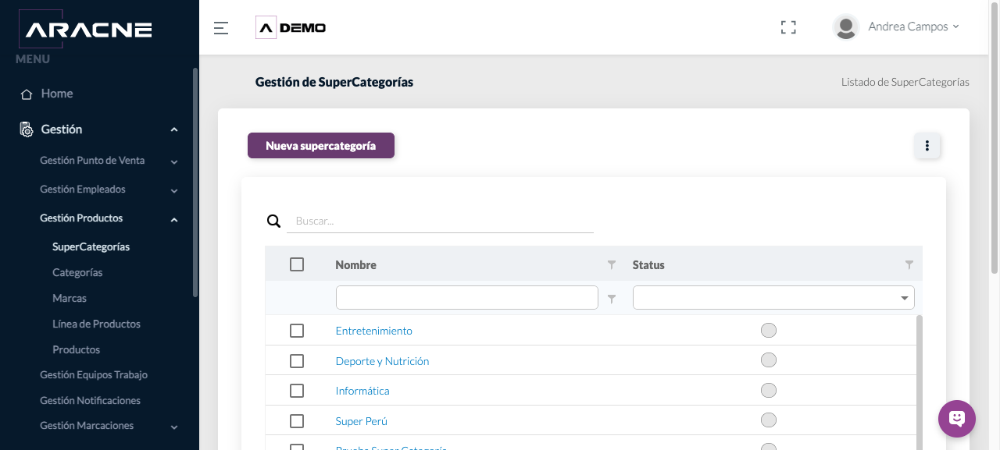
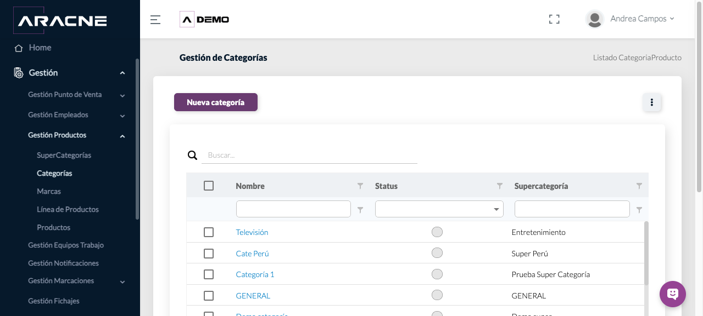
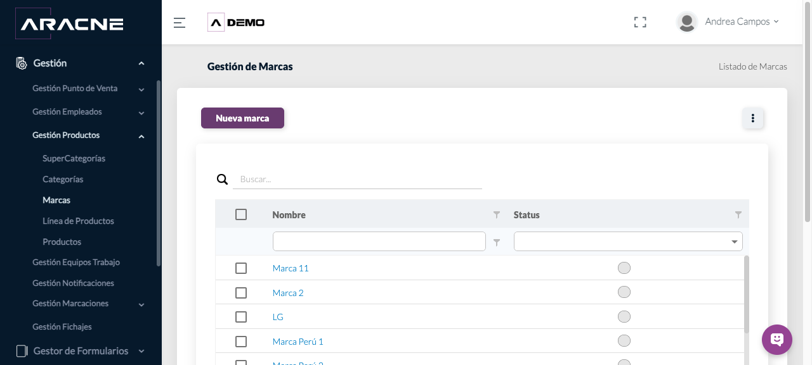
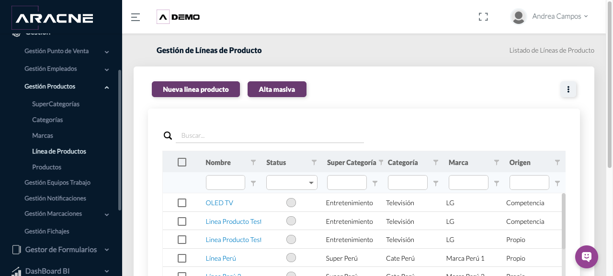
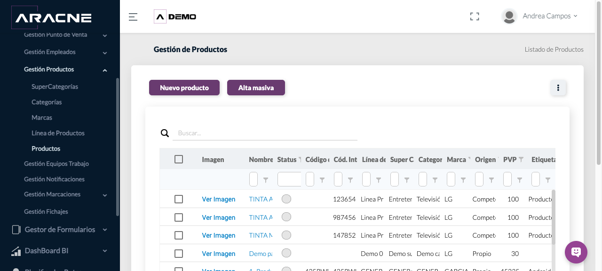

Back Office
Catálogo de productos
Mantener la jerarquía comercial usada en productos y formularios.
Requisitos
Definir antes la jerarquía y los valores propios o de competencia.
Dónde estáGestión › Gestión Productos
Procedimiento
- Crea o consulta primero Supercategorías.

Paso 1. Gestión de supercategorías. - Dentro de cada supercategoría, crea las Categorías necesarias.

Paso 2. Gestión de categorías. - Mantén las Marcas disponibles.

Paso 3. Gestión de marcas. - Crea Líneas de producto vinculando supercategoría, categoría, marca y origen.

Paso 4. Gestión de líneas de producto. - Crea o consulta Productos y comprueba sus códigos, línea, marca, origen y PVP.

Paso 5. Listado y datos de productos.
Campos y controles
- Status: disponibilidad del elemento.
- Origen: distingue producto propio o de competencia cuando el selector lo ofrece.
- Código de barras y código interno: identificadores del producto.
- Etiqueta de producto: clasificación adicional visible en el listado.
Resultado esperado
La jerarquía queda disponible para seleccionar productos de forma coherente.
Cómo comprobarlo
Recorre de supercategoría a producto y confirma que las relaciones coinciden.
Problemas habituales
- Si una opción no aparece, comprueba que el elemento padre esté activo.
- Si una línea queda mal clasificada, revisa supercategoría, categoría, marca y origen.
Operaciones relacionadas
Formularios AvanzadosPanel de Control